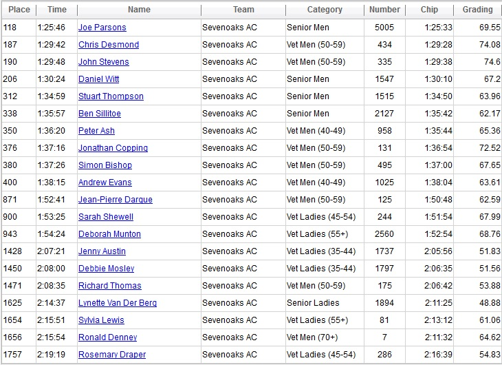

Joe Parsons led a big contingent of SAC runners in the PW half on Sunday 30 March (photo courtesy of Sevenoaks Chronicle). The SAC results (with the usual caveat that Sports Systems gradings are incorrect) were as follows (click blue article title above if chip time not visible):

Full results are here.